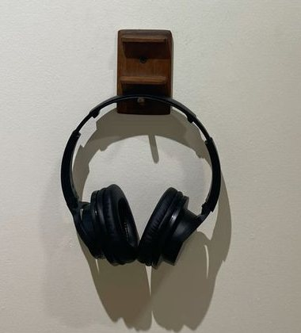
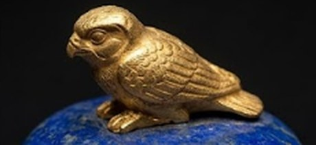
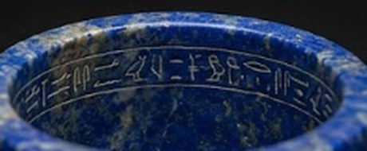

Pacific Antiquities Museum'da (PAM) eylül ayından bu yana gezilebilen "Sular Altındaki Kraliçe" sergisinin 3 Ocak Perşembe günü kapanması planlanıyordu. Müze yönetimi dün akşam yaptığı açıklamayla kapanış tarihini 17 Ocak'a çekti.
Gerekçe basit: talep. Sergi, dört ay içinde iki yüz doksan bin ziyaretçi ağırladı ve aralık ayının üçüncü haftasında günlük kapasitesini ilk kez tamamen doldurdu.
Bilet sistemi baştan beri saatli ve tarihli işliyor. Ziyaretçiler birer saatlik dilimlere bölünmüş gruplar hâlinde alınıyor; her dilime yüz yirmi kişi giriyor ve sekiz salonu gezmek için bir saati oluyor. Uzatma kararının ardından açılan ek kontenjan, duyurudan sonraki birkaç saat içinde tükendi.

Müze sözcüsü, ikinci bir uzatmanın söz konusu olmadığını belirtti: "Eserlerin bir kısmı ödünç. Takvim, ödünç veren kurumlarla yapılan anlaşmalara bağlı. 17 Ocak kesin tarihtir."
Serginin bu kadar ilgi görmesinde eserler kadar tasarımının da payı var. Sekiz salonun tamamı karanlık. Duvarlara su dalgalanmaları yansıtılıyor, zeminden yükselen mavi ışıklar ziyaretçilerin yüzlerini alttan aydınlatıyor.
Girişte herkese bir kulaklık veriliyor. Salonlarda alçak bir davul, telli bir çalgı ve aralarda dalga sesi duyuluyor; bir oyuncu, Kleopatra'ya atfedilen sözleri İngilizce okuyor. Sonuç, yüz kişinin omuz omuza yürüdüğü ama kimsenin konuşmadığı bir sessizlik.
İlk salonda hiçbir eser yok. Duvarlarda yalnızca su var. Wynn bu boş koridoru "gözün karanlığa alışması için gereken doksan saniye" diye tanımlıyor.
İkinci salonda on altı ayak boyunda iki granit heykel var: bir Ptolemaios kralı ve bir kraliçe. Üçüncü salon sikkelere ayrılmış; camın ardında aynı profili tekrarlayan yüzlerce küçük yeşil daire. Dördüncü salonda İsis'in düğümlü elbisesiyle bir kraliçe duruyor.
Altıncı salon kazının kendisine ayrılmış. Batık saray alanının planı zemine yansıtılıyor, duvarlarda dalgıçların çektiği görüntüler dönüyor; vitrinlerde tortunun altından çıkarılmış gündelik nesneler var: bir tarak, iki kandil, kırık bir kase.
Yedinci salonda Roma var. Mermer büst parçaları, yazıtlar ve Actium sonrası Roma'da dolaşıma giren, Mısır kraliçesini bir tehdit olarak resmeden metinlerden seçkiler. Kulaklıktaki ses bu salonda ilk kez erkek sesine dönüyor.
Sekizinci salonda yine hiçbir eser yok. Duvarın tamamına kraliçenin adı hiyerogliflerle kazınmış. Işık yavaşça sönüyor, kulaklıktaki ses susuyor ve ziyaretçiler çıkışa karanlıkta yürüyor.
"Eserleri aydınlatmadık. Suyun altında nasıl duruyorlarsa öyle bıraktık. Ziyaretçi karanlığa alışmak zorunda — tıpkı dalgıçlar gibi."
— Dr. Helena Wynn, Sergi KüratörüWynn, serginin en çok yorum alan bölümünün beşinci salon olduğunu söylüyor. O salonda tek bir nesne var.
Beşinci salonun vitrini küçük ve duvara gömülü. İçinde bir avuç içi büyüklüğünde, koyu mavi lapis lazuli bir merhem kabı duruyor. Kapağında altından işlenmiş, kanatlarını kavuşturmuş uyuyan bir şahin yavrusu var. Ağzı hâlâ mühürlü.
Etiketinde yalnızca şu yazıyor: "İskenderiye Limanı, Antirhodos Adası. Sualtı kazısı." Altında da bulunuş tarihi: 9 Ocak 2002.
Etiketin en altında ise kabın ağzına kazınmış hiyerogliflerin çevirisi var: "Annesinden, yeryüzüne inen yeni tanrıçaya."


Kap on bir yıl önce, İskenderiye Körfezi'ndeki Ptolemaios Sarayı kalıntılarının "kraliyet çocuk odası" olarak adlandırılan bölümünde bulunmuştu. Bulunduğu günden bu yana bir kez olsun açılmadı; içindeki karışım hakkında bilinenlerin tamamı dış yüzeyden alınan mikro örneklere dayanıyor.
Eserin mülkiyeti hâlâ tartışmalı. Mısır Yüksek Antikiteler Konseyi ile yürütülen görüşmeler on bir yıldır sürüyor ve serginin katalogunda kap, sahibi belirtilmeden yalnızca "ödünç" olarak geçiyor.
Görüşmelerin yeni turunun ocak ayında yapılması bekleniyor. Bu, kabın Amerika'da halka açık olarak sergilendiği son dönem olabilir.